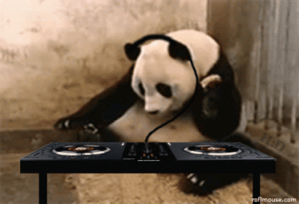

Team
people involved in the project and their outlook
Chris

Spirit animal zebra. Just moved to Portland from LA. Big into music which helped with designing the app and likes to hike.
Darius

An intrepid mind, lover of the arts and general destroyer of worlds. Darius enjoys gardening digesting the flesh of his enemies and music. Born and raised in the slums of Shaolin, Darius is a Tiger Claw Kung Fu master and has defeated many foes.
Nicky
A passion for music fueled by bamboo shoots and aged tea, Nicky is a founder of the Panda's for Equal Turntable access and a strong supporter of the Panda's Back to Oregon movement. Short-grain brown rice native american ancestry synchronicity alkaline rites of passage, nectar prius.